Change analysis for Thailand for PRIMAP-hist v2.5.1_final compared to
v2.5_final
Overview over
emissions by sector and gas
The following figures show the aggregate national total emissions
excluding LULUCF AR6GWP100 for the country reported priority scenario.
The dotted linesshow the v2.5_final data.
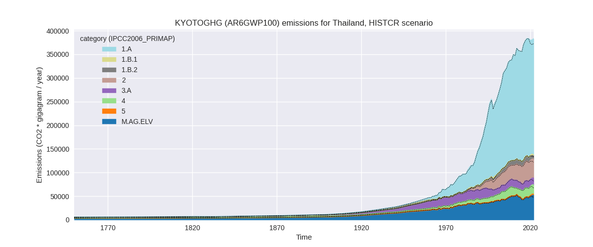
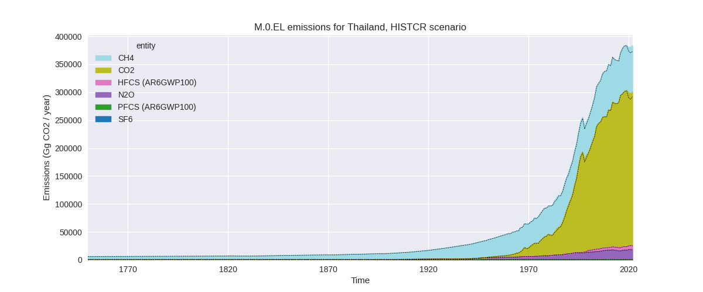
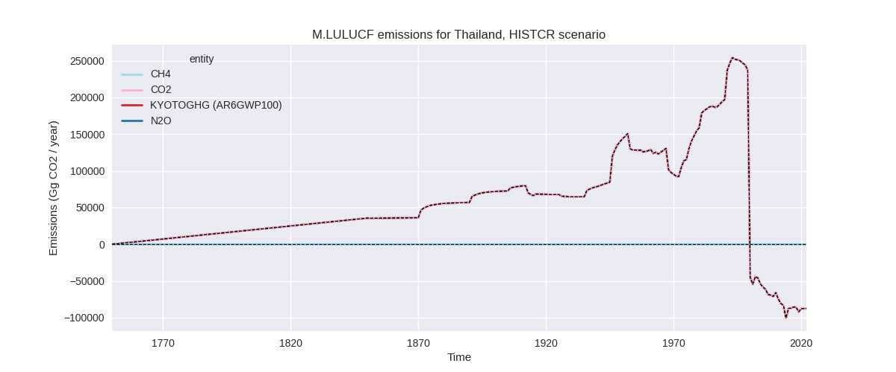
The following figures show the aggregate national total emissions
excluding LULUCF AR6GWP100 for the third party priority scenario. The
dotted linesshow the v2.5_final data.
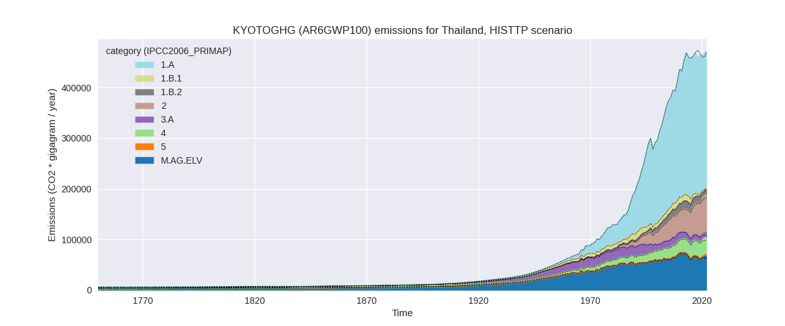
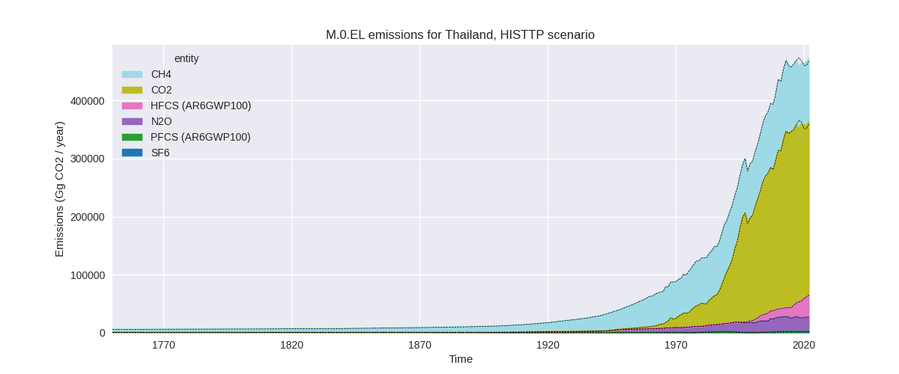
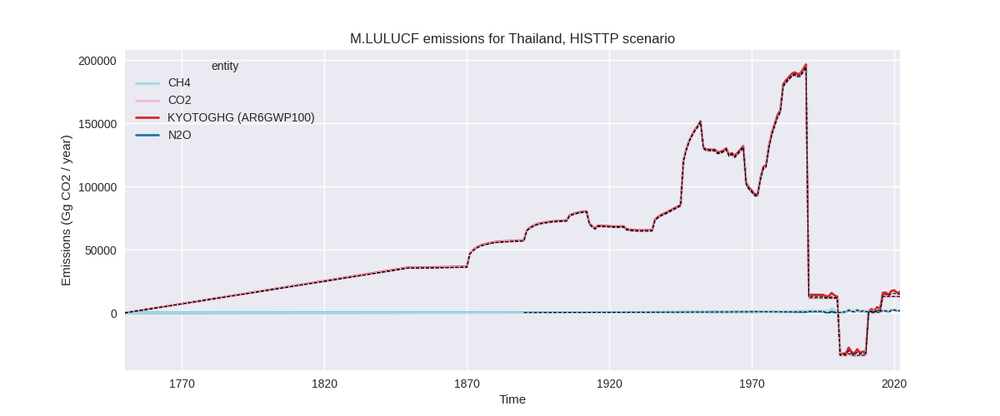
Overview over changes
In the country reported priority scenario we have the following
changes for aggregate Kyoto GHG and national total emissions excluding
LULUCF (M.0.EL):
- Emissions in 2022 have changed by 2.6%% (9739.77 Gg CO2 / year)
- Emissions in 1990-2022 have changed by 0.4%% (1197.24 Gg CO2 / year)
In the third party priority scenario we have the following changes
for aggregate Kyoto GHG and national total emissions excluding LULUCF
(M.0.EL):
- Emissions in 2022 have changed by 0.7%% (3241.47 Gg CO2 / year)
- Emissions in 1990-2022 have changed by -0.3%% (-1063.18 Gg CO2 / year)
Most
important changes per scenario and time frame
In the country reported priority scenario the
following sector-gas combinations have the highest absolute impact on
national total KyotoGHG (AR6GWP100) emissions in 2022
(top 5):
- 1: 1.A, CO2 with 6841.28 Gg CO2 / year (2.9%)
- 2: M.AG.ELV, CH4 with 4923.43 Gg CO2 / year (14.7%)
- 3: 1.B.2, CH4 with -3065.88 Gg CO2 / year (-27.0%)
- 4: 4, CH4 with 1023.39 Gg CO2 / year (5.8%)
- 5: M.AG.ELV, N2O with 896.28 Gg CO2 / year (7.9%)
In the country reported priority scenario the
following sector-gas combinations have the highest absolute impact on
national total KyotoGHG (AR6GWP100) emissions in
1990-2022 (top 5):
- 1: 1.A, CO2 with 900.45 Gg CO2 / year (0.5%)
- 2: M.AG.ELV, CH4 with 223.78 Gg CO2 / year (0.7%)
- 3: 2, CO2 with 205.93 Gg CO2 / year (0.9%)
- 4: 1.B.2, CH4 with -145.51 Gg CO2 / year (-1.8%)
- 5: 1.A, CH4 with -46.44 Gg CO2 / year (-1.9%)
In the third party priority scenario the following
sector-gas combinations have the highest absolute impact on national
total KyotoGHG (AR6GWP100) emissions in 2022 (top
5):
- 1: M.AG.ELV, CH4 with 5199.75 Gg CO2 / year (11.2%)
- 2: 1.B.2, CH4 with -4624.80 Gg CO2 / year (-32.2%)
- 3: 1.A, CO2 with 3571.85 Gg CO2 / year (1.4%)
- 4: M.AG.ELV, CO2 with 1158.97 Gg CO2 / year (68.1%)
- 5: 2, CO2 with -1017.26 Gg CO2 / year (-2.9%)
In the third party priority scenario the following
sector-gas combinations have the highest absolute impact on national
total KyotoGHG (AR6GWP100) emissions in 1990-2022 (top
5):
- 1: 1.A, CO2 with -992.70 Gg CO2 / year (-0.5%)
- 2: 1.B.2, CH4 with -589.22 Gg CO2 / year (-5.8%)
- 3: M.AG.ELV, CO2 with 359.96 Gg CO2 / year (21.4%)
- 4: M.AG.ELV, CH4 with 252.41 Gg CO2 / year (0.5%)
- 5: M.AG.ELV, N2O with -118.60 Gg CO2 / year (-0.9%)
Notes on data changes
No country specific notes present for this changelog.
Changes by sector and gas
For each scenario and time frame the changes are displayed for all
individual sectors and all individual gases. In the sector plot we use
aggregate Kyoto GHGs in AR6GWP100. In the gas plot we usenational total
emissions without LULUCF. ## country reported scenario
2022
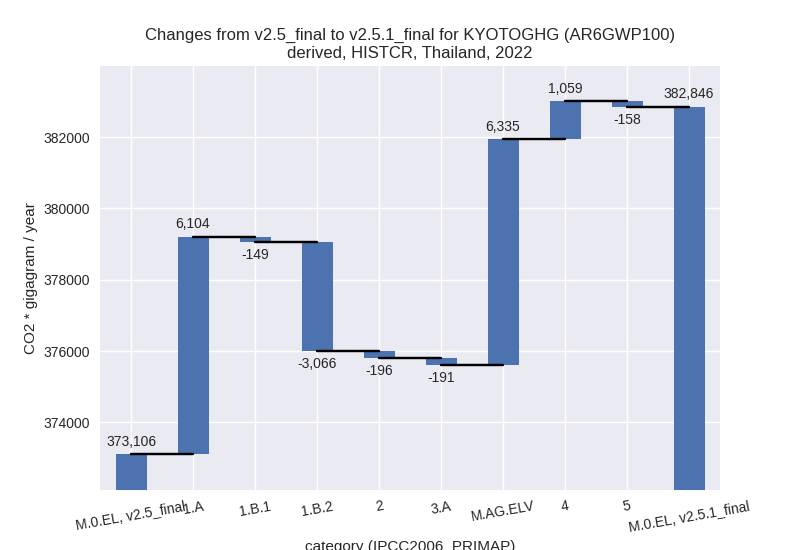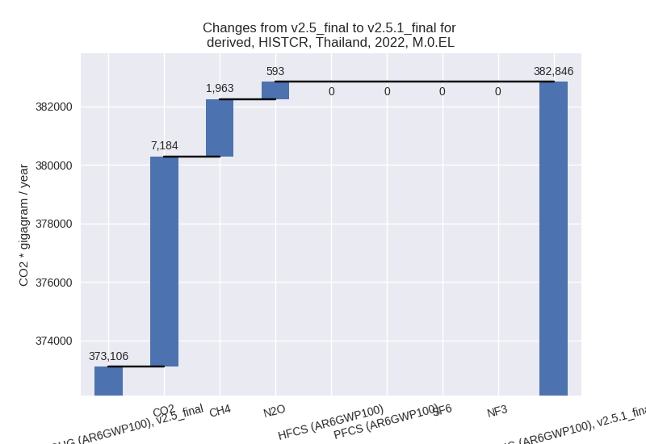
1990-2022
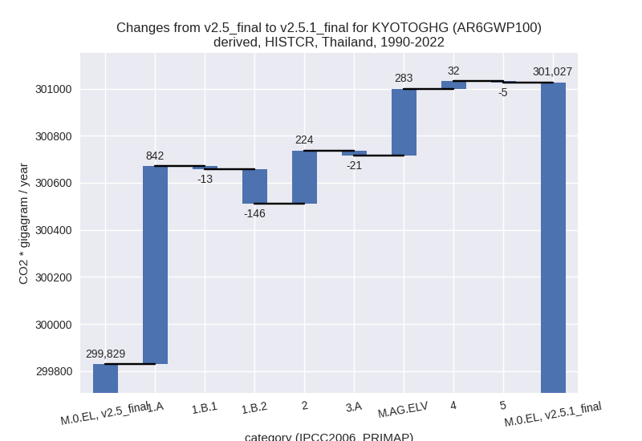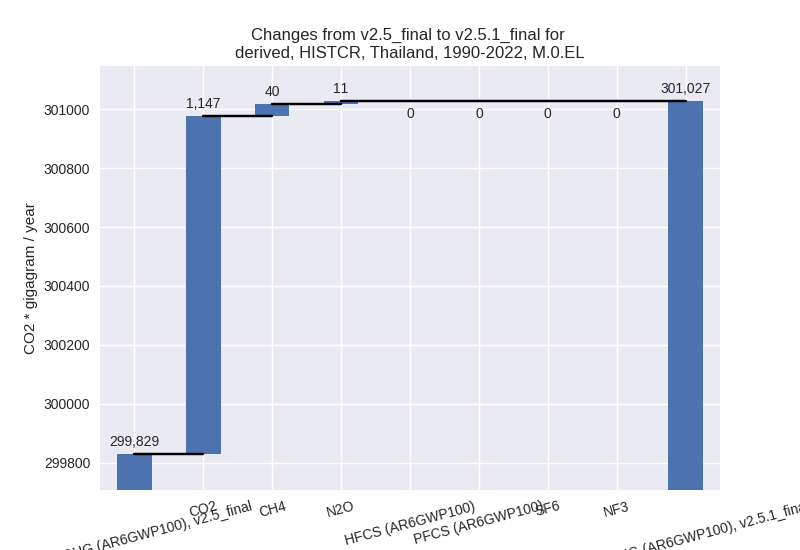
third party scenario
2022
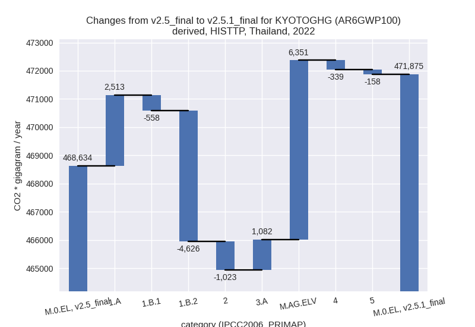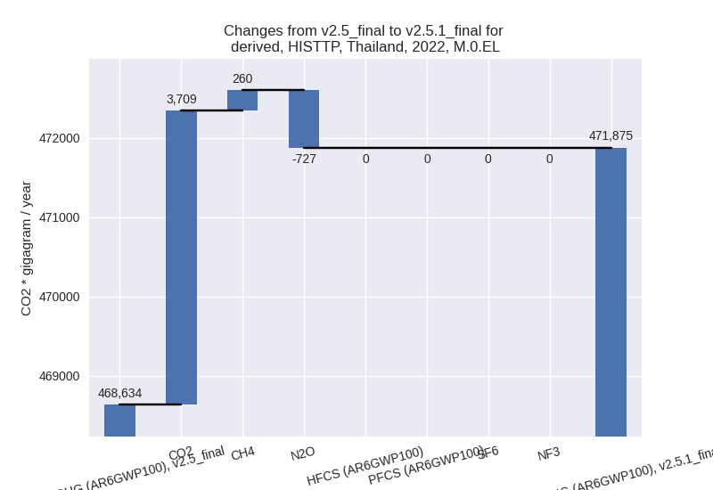
1990-2022
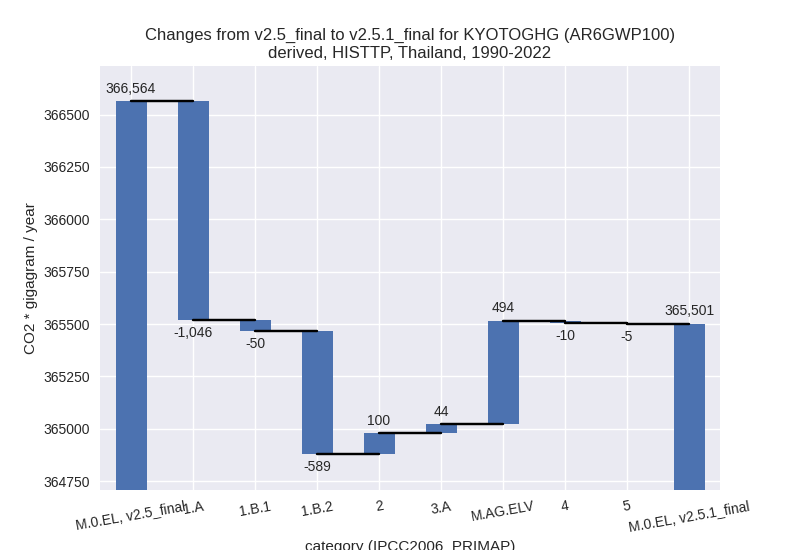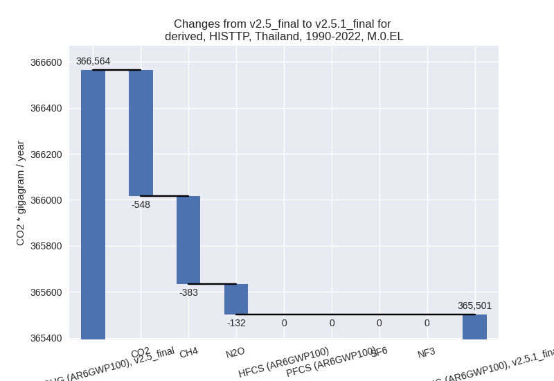
Detailed changes for the
scenarios:
country reported scenario
(HISTCR):
Most important changes
per time frame
For 2022 the following sector-gas combinations have
the highest absolute impact on national total KyotoGHG (AR6GWP100)
emissions in 2022 (top 5):
- 1: 1.A, CO2 with 6841.28 Gg CO2 / year (2.9%)
- 2: M.AG.ELV, CH4 with 4923.43 Gg CO2 / year (14.7%)
- 3: 1.B.2, CH4 with -3065.88 Gg CO2 / year (-27.0%)
- 4: 4, CH4 with 1023.39 Gg CO2 / year (5.8%)
- 5: M.AG.ELV, N2O with 896.28 Gg CO2 / year (7.9%)
For 1990-2022 the following sector-gas combinations
have the highest absolute impact on national total KyotoGHG (AR6GWP100)
emissions in 1990-2022 (top 5):
- 1: 1.A, CO2 with 900.45 Gg CO2 / year (0.5%)
- 2: M.AG.ELV, CH4 with 223.78 Gg CO2 / year (0.7%)
- 3: 2, CO2 with 205.93 Gg CO2 / year (0.9%)
- 4: 1.B.2, CH4 with -145.51 Gg CO2 / year (-1.8%)
- 5: 1.A, CH4 with -46.44 Gg CO2 / year (-1.9%)
Changes in the main sectors for aggregate KyotoGHG (AR6GWP100)
are
- 1: Total sectoral emissions in 2022 are 254276.55
Gg CO2 / year which is 66.4% of M.0.EL emissions. 2022 Emissions have
changed by 1.1% (2889.31 Gg CO2 /
year). 1990-2022 Emissions have changed by 0.3% (683.33 Gg CO2 / year).
- 2: Total sectoral emissions in 2022 are 40091.22 Gg
CO2 / year which is 10.5% of M.0.EL emissions. 2022 Emissions have
changed by -0.5% (-195.51 Gg CO2 /
year). 1990-2022 Emissions have changed by 0.8% (224.39 Gg CO2 / year).
- M.AG: Total sectoral emissions in 2022 are 66990.77
Gg CO2 / year which is 17.5% of M.0.EL emissions. 2022 Emissions have
changed by 10.1% (6144.88 Gg CO2 /
year). 1990-2022 Emissions have changed by 0.5% (262.22 Gg CO2 / year). For 2022 the
changes per gas
are:
The changes come from the following subsectors:
- 3.A: Total sectoral emissions in 2022 are 14311.93
Gg CO2 / year which is 21.4% of category M.AG emissions. 2022 Emissions
have changed by -1.3% (-190.60 Gg
CO2 / year). 1990-2022 Emissions have changed by -0.1% (-20.78 Gg CO2 / year).
- M.AG.ELV: Total sectoral emissions in 2022 are
52678.83 Gg CO2 / year which is 78.6% of category M.AG emissions. 2022
Emissions have changed by 13.7%
(6335.48 Gg CO2 / year). 1990-2022 Emissions have changed by 0.7% (283.00 Gg CO2 / year). For 2022 the
changes per gas
are:
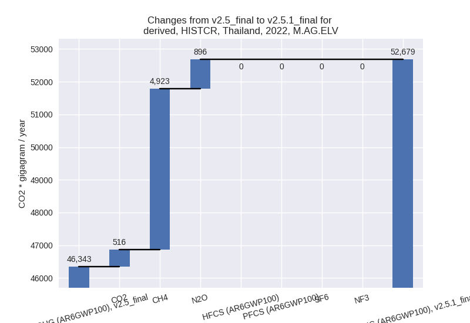
There is no subsector information available in PRIMAP-hist.
- 4: Total sectoral emissions in 2022 are 19692.54 Gg
CO2 / year which is 5.1% of M.0.EL emissions. 2022 Emissions have
changed by 5.7% (1059.43 Gg CO2 /
year). 1990-2022 Emissions have changed by 0.2% (32.10 Gg CO2 / year). For 2022 the
changes per gas
are:
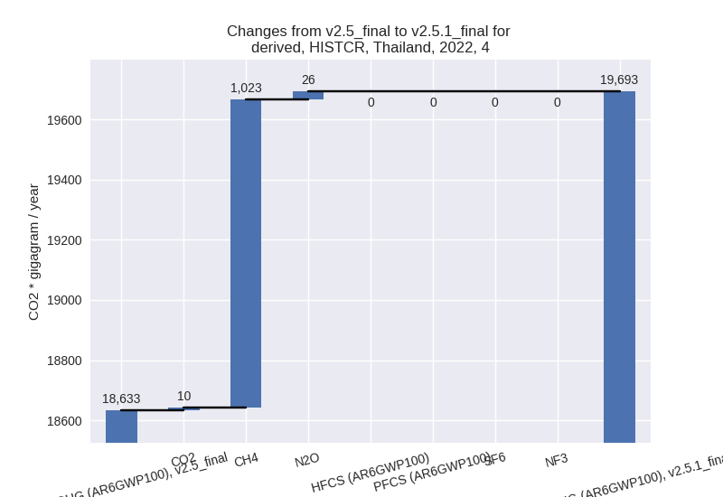
- 5: Total sectoral emissions in 2022 are 1794.77 Gg
CO2 / year which is 0.5% of M.0.EL emissions. 2022 Emissions have
changed by -8.1% (-158.33 Gg CO2 /
year). 1990-2022 Emissions have changed by -0.3% (-4.80 Gg CO2 / year). For 2022 the
changes per gas
are:
third party scenario (HISTTP):
Most important changes
per time frame
For 2022 the following sector-gas combinations have
the highest absolute impact on national total KyotoGHG (AR6GWP100)
emissions in 2022 (top 5):
- 1: M.AG.ELV, CH4 with 5199.75 Gg CO2 / year (11.2%)
- 2: 1.B.2, CH4 with -4624.80 Gg CO2 / year (-32.2%)
- 3: 1.A, CO2 with 3571.85 Gg CO2 / year (1.4%)
- 4: M.AG.ELV, CO2 with 1158.97 Gg CO2 / year (68.1%)
- 5: 2, CO2 with -1017.26 Gg CO2 / year (-2.9%)
For 1990-2022 the following sector-gas combinations
have the highest absolute impact on national total KyotoGHG (AR6GWP100)
emissions in 1990-2022 (top 5):
- 1: 1.A, CO2 with -992.70 Gg CO2 / year (-0.5%)
- 2: 1.B.2, CH4 with -589.22 Gg CO2 / year (-5.8%)
- 3: M.AG.ELV, CO2 with 359.96 Gg CO2 / year (21.4%)
- 4: M.AG.ELV, CH4 with 252.41 Gg CO2 / year (0.5%)
- 5: M.AG.ELV, N2O with -118.60 Gg CO2 / year (-0.9%)
Changes in the main sectors for aggregate KyotoGHG (AR6GWP100)
are
- 1: Total sectoral emissions in 2022 are 283235.70
Gg CO2 / year which is 60.0% of M.0.EL emissions. 2022 Emissions have
changed by -0.9% (-2671.48 Gg CO2 /
year). 1990-2022 Emissions have changed by -0.7% (-1685.43 Gg CO2 / year).
- 2: Total sectoral emissions in 2022 are 74335.87 Gg
CO2 / year which is 15.8% of M.0.EL emissions. 2022 Emissions have
changed by -1.4% (-1022.64 Gg CO2 /
year). 1990-2022 Emissions have changed by 0.3% (99.75 Gg CO2 / year).
- M.AG: Total sectoral emissions in 2022 are 79304.28
Gg CO2 / year which is 16.8% of M.0.EL emissions. 2022 Emissions have
changed by 10.3% (7433.37 Gg CO2 /
year). 1990-2022 Emissions have changed by 0.7% (537.58 Gg CO2 / year). For 2022 the
changes per gas
are:
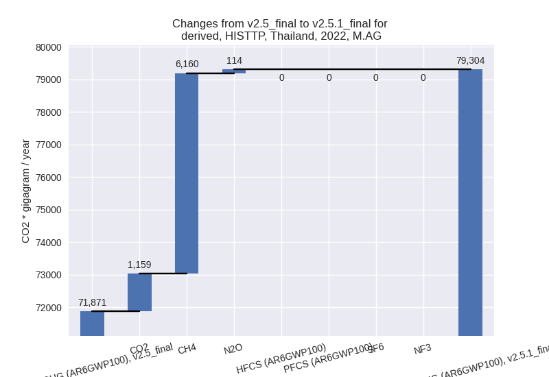
The changes come from the following subsectors:
- 3.A: Total sectoral emissions in 2022 are 10781.22
Gg CO2 / year which is 13.6% of category M.AG emissions. 2022 Emissions
have changed by 11.2% (1082.35 Gg
CO2 / year). 1990-2022 Emissions have changed by 0.3% (43.80 Gg CO2 / year). For 2022 the
changes per gas
are:
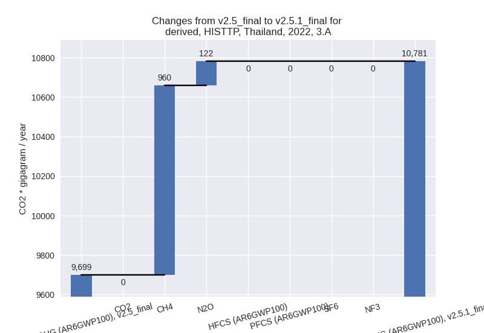
There is no subsector information available in PRIMAP-hist.
- M.AG.ELV: Total sectoral emissions in 2022 are
68523.06 Gg CO2 / year which is 86.4% of category M.AG emissions. 2022
Emissions have changed by 10.2%
(6351.03 Gg CO2 / year). 1990-2022 Emissions have changed by 0.8% (493.78 Gg CO2 / year). For 2022 the
changes per gas
are:
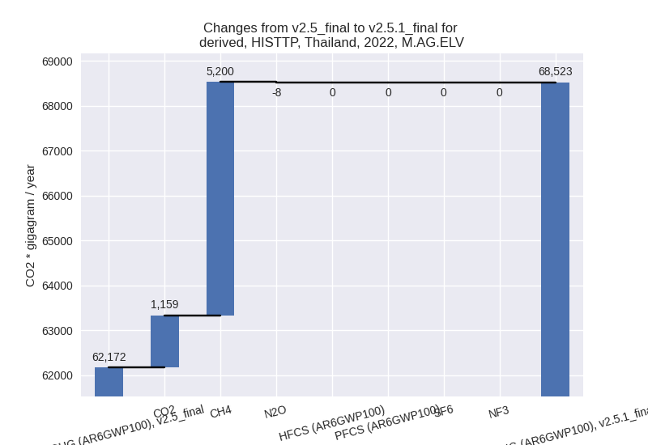
There is no subsector information available in PRIMAP-hist.
- 4: Total sectoral emissions in 2022 are 33204.44 Gg
CO2 / year which is 7.0% of M.0.EL emissions. 2022 Emissions have
changed by -1.0% (-339.45 Gg CO2 /
year). 1990-2022 Emissions have changed by -0.0% (-10.29 Gg CO2 / year).
- 5: Total sectoral emissions in 2022 are 1794.77 Gg
CO2 / year which is 0.4% of M.0.EL emissions. 2022 Emissions have
changed by -8.1% (-158.33 Gg CO2 /
year). 1990-2022 Emissions have changed by -0.3% (-4.80 Gg CO2 / year). For 2022 the
changes per gas
are:
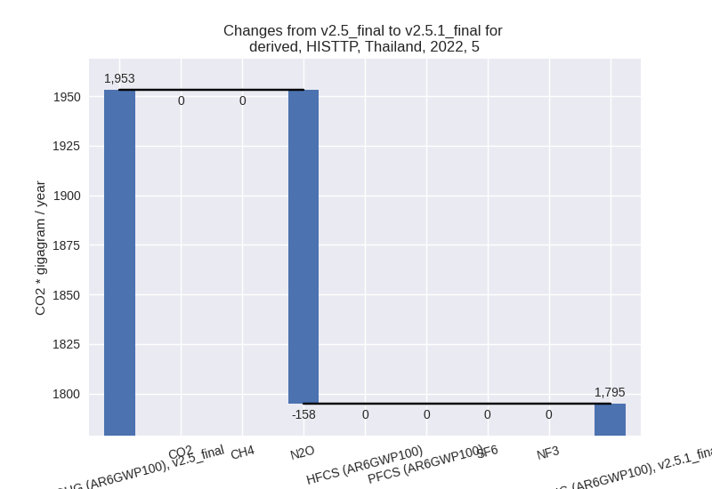